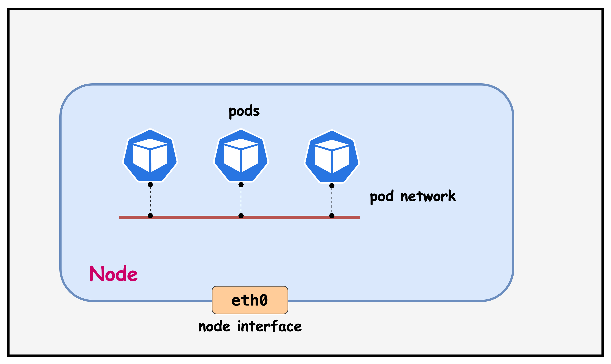
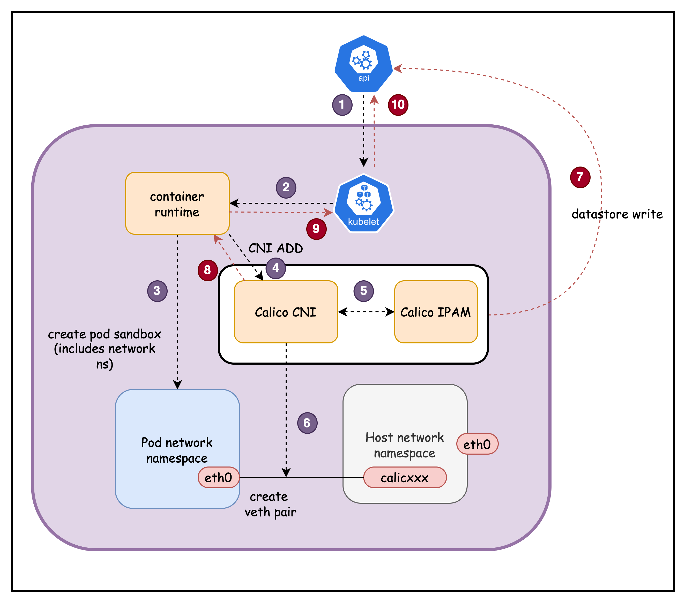
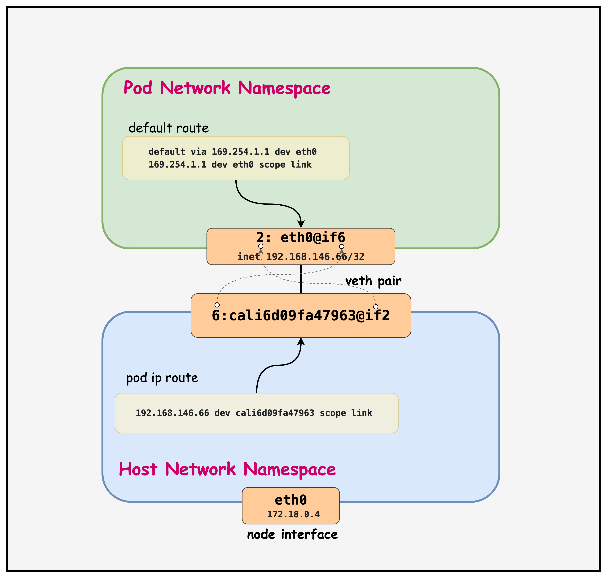

唯一地址
每个 Pod 从 Calico IPAM 获得一个唯一 IP，课程池为 192.168.0.0/16。
ContainerLab · Kind · Calico CNI
沿着 Lesson 02 的本地环境，把一个 Pod 的网卡、路由、veth、Node underlay 和跨节点转发连成一条完整路径。
从抽象模型落到 Linux

课程原图：Pod Network Architecture
每个 Pod 从 Calico IPAM 获得一个唯一 IP，课程池为 192.168.0.0/16。
Pod 有独立网络命名空间，接口和路由表与宿主机分开。
veth pair 把 Pod 的 eth0 接到宿主机 cali*，形成点到点链路。
宿主机路由把本地 /32 与远端 Pod 网段接起来，策略在路径上执行。
Lesson 02 仓库快照
| 对象 | 课程配置 | 作用 |
|---|---|---|
| Kind 镜像 | kindest/node:v1.28.0 | 3 个节点 |
| 默认 CNI | disableDefaultCNI: true | 留给 Calico 接管 |
| Pod CIDR | 192.168.0.0/16 | 工作负载地址池 |
| Service CIDR | 10.96.0.0/16 | ClusterIP 地址池 |
| Calico | v3.30.0 | Operator 安装 |
| IPAM block | /26 | 按节点聚合地址 |
页面示例写了 containerlab/pod-network。仓库真实目录为 containerlab/02-pod-network，以本地仓库为准。
# pod-network-no-cni.yaml networking: disableDefaultCNI: true podSubnet: "192.168.0.0/16" serviceSubnet: "10.96.0.0/16" # custom-resources.yaml calicoNetwork: ipPools: - blockSize: 26 cidr: 192.168.0.0/16 encapsulation: VXLANCrossSubnet natOutgoing: Enabled nodeSelector: all()
deploy.sh
sudo containerlab deploy -t pod-network.clab.yaml
ContainerLab 调用 k8s-kind 节点，加载 no-CNI 配置。
kubectl create -f operator-crds.yaml
再安装 Tigera Operator，应用 custom-resources.yaml。
kubectl apply -f tools/multitool-pod.yaml
脚本等待 TigeraStatus 可用后再部署测试 Pod 与 Service。
export KUBECONFIG=$(pwd)/pod-network.kubeconfig
演示结束后运行 ./destroy.sh，按提示确认清理。
tigerastatus 中 apiserver 与 calico 可用，三个 Node 都是 Ready。
tools/multitool-pod.yaml
kind: Pod metadata: name: multitool labels: { app: multitool } spec: containers: - image: praqma/network-multitool:latest ports: [80, 443] command: nginx -g "daemon off;" --- kind: Service metadata: name: multitool-service spec: selector: { app: multitool } type: ClusterIP ports: [80, 443]
镜像内带 curl、dig、ping、traceroute、ss、iperf3 与 tcpdump，适合沿路径逐点验证。
容器以前台方式运行 nginx，并暴露 80 与 443。Pod 网络建立后可以立即做连通性测试。
Service 的 selector app=multitool 选中 Pod。DNS 名称最终解析到这个 ClusterIP，而不是直接解析到 Pod IP。
课程设置 CPU request 100m、limit 200m，内存 request 128Mi、limit 256Mi，避免测试工具无边界占用节点资源。
演示口径：Lesson 02 的一个 Pod 足够查看接口、路由、DNS 与本地 veth。要演示同节点和跨节点互访，需要再增加测试 Pod，或进入 Lesson 03。
一次配置与持续协调
Pod 创建或删除时由容器运行时调用。成功返回前，Pod 网络还没有准备好。
它观察期望状态并维护主机数据路径。后续策略或远端路由变化不需要重新创建 Pod。
从创建请求到 Running

Pod 绑定到某个 Node
进入本机创建流程
先有 network namespace
执行 CNI ADD
从节点 block 取 IP
eth0 ↔ cali*
写 WorkloadEndpoint
交回网络结果
网络已就绪
Running + PodIP
kubectl exec -it multitool -- sh
ip addr2: eth0@if6: <BROADCAST,MULTICAST,UP>
mtu 1450 state UP
link/ether 7e:08:91:93:9c:3b
inet 192.168.146.66/32 scope global eth0
link-netnsid 0
ip link1: lo: <LOOPBACK,UP,LOWER_UP> 2: eth0@if6: <BROADCAST,MULTICAST,UP> link-netnsid 0
Pod 里看到接口 2，@if6 指向对端 namespace 中的接口索引 6。
Pod 只有一个主机地址，没有把整个 /26 当作本地二层网段。
为可能出现的 VXLAN 外层预留约 50 字节，避免内层 1500 字节包超出 underlay MTU。
说明 eth0 的对端位于宿主机看到的网络命名空间。
现场提示：IP、MAC、接口索引和 cali* 名称都会变化。判断结构，不要背示例值。
Pod routing table
multitool:/# ip route
default via 169.254.1.1 dev eth0
169.254.1.1 dev eth0 scope link
每个 Pod 都可以把所有非本地流量交给同一个链路本地下一跳。
169.254.1.1 来自 link-local 范围，不需要在宿主机 cali* 上配置这个 IPv4 地址。
宿主机返回自己的 MAC，再由 Linux 路由表决定本地 Pod、远端节点或外部网络。
docker exec -it pod-network-worker /bin/bash
$ kubectl get pod multitool -o wide NAME IP NODE multitool 192.168.146.66 pod-network-worker
# ip route | grep 192.168.146.66 192.168.146.66 dev cali6d09fa47963 scope link
6: cali6d09fa47963@if2: <UP,LOWER_UP>
mtu 1450
link/ether ee:ee:ee:ee:ee:ee
link-netns cni-03a82789-...
目的地址等于 192.168.146.66 时，包直接发进 cali6d09fa47963。它的 veth 对端正是 Pod 内的 eth0。
host-side veth 不需要配置 Pod 网段 IPv4 地址。三层可达性由路由与邻居处理完成。
Point-to-point

default via 169.254.1.1 dev eth0
169.254.1.1 dev eth0 scope link
192.168.146.66 dev cali6d09fa47963 scope link
Pod 发出的 IP 包跨过 veth 后进入主机协议栈。Calico 的策略、conntrack 与后续路由都能在这里接管。
课程原图：Calico Veth Pair Architecture
172.18.0.0/16
worker ping 172.18.0.2 验证的是 Node IP 网络。Pod 跨节点转发先依赖这条路。Pod A · Host FIB · Pod B
VXLANCrossSubnet
192.168.93.201 → 192.168.112.197UDP/4789 外层172.18.0.3 → 172.18.0.2先比较 Node 子网，再决定封装
| 检查项 | 本课程环境 | 跨 underlay 子网 |
|---|---|---|
| Node IP | 172.18.0.3 → 172.18.0.2 | 例如 10.10.1.10 → 10.10.2.10 |
| 子网关系 | 同属 172.18.0.0/16 | 不在同一 Node 子网 |
| 线上报文 | 原始 Pod IP 包 | VXLAN 外层 Node IP + 内层 Pod IP |
| underlay 要求 | 能路由 Pod 前缀或使用远端 Node 下一跳 | 只需能路由 Node IP 与放行 UDP/4789 |
| MTU | Pod MTU 仍按 1450 配置 | 1450 为 VXLAN 头部留空间 |
集群内 Pod 到 Pod 通信通常不做 SNAT，策略与抓包仍能看到真实 Pod IP。
它针对发往 Calico IPPool 之外的目的地进行源地址转换，不等于集群内互访要 NAT。
用 ip route、Calico 配置和组件状态判断，避免把所有远端路由都口头归因于 BGP。
/etc/resolv.conf
curl multitool-service
短名称少于 5 个点，resolver 会尝试追加 search domain。
nameserver 10.96.0.10
kube-dns Service 接收查询，返回 Service 名称对应的 ClusterIP。
multitool-service.default.svc.cluster.local
Lesson 02 manifest 已创建 80 与 443 两个端口的 ClusterIP Service。
search default.svc.cluster.local svc.cluster.local cluster.local ec2.internal nameserver 10.96.0.10 options ndots:5
边界提醒：DNS 先把名字变成地址；Service VIP 到 Endpoint 的转发属于后续 Service 数据路径，不要和 CNI 创建 veth 混在一起。
命令输出就是证据链
确认 /32、MTU、eth0@if* 与 169.254.1.1。
确认远端 Pod 的下一跳、出口接口与是否出现 vxlan.calico。
确认最终 /32 直连路由指向目的 Pod 的 cali*。
同子网看原始 Pod 包，跨子网同时观察 VXLAN 外层。
从环境健康到跨节点证明
containerlab inspect -t pod-network.clab.yaml先确认三个 Kind 容器都 running。
export KUBECONFIG=$(pwd)/pod-network.kubeconfig锁定当前实验，避免误操作其他集群。
kubectl get nodes -o wide确认 Node Ready 与 172.18.0.x InternalIP。
kubectl get pod multitool -o wide记录 Pod IP 与所在节点。
kubectl exec multitool -- ip addr讲 /32、MTU 与 eth0@if*。
kubectl exec multitool -- ip route讲 169.254.1.1 虚拟下一跳。
kubectl exec multitool -- cat /etc/resolv.conf核对 CoreDNS Service IP 与 ndots。
docker exec -it <pod-node> /bin/bash进入实际承载 Pod 的 Kind Node。
ip route | grep <pod-ip>找到指向 cali* 的本地 /32。
ip addr show <cali-interface>把 host-side veth 与 Pod eth0 对上。
ip route get <remote-pod-ip>展示跨节点下一跳与出口。
tcpdump -ni any host <remote-pod-ip>用真实包收尾，验证是否封装与源 IP 保留。
课程 Lesson 02 默认只有一个 multitool Pod。跨节点演示可沿用 Lesson 03 的两个 DaemonSet，或额外创建固定到不同 Node 的测试 Pod。
少猜，多看路由与抓包
| 现象 | 优先检查 | 常见方向 | 关键命令 |
|---|---|---|---|
| Pod 一直 ContainerCreating | CNI ADD 是否成功 | CNI 配置、IPAM、calico-node、地址池耗尽 | kubectl describe podkubectl logs -n calico-system ds/calico-node |
| Pod 有 IP 但出不去 | Pod 默认路由与 host-side veth | 169.254.1.1 路由缺失、veth down、策略阻断 | ip routeip link show |
| 同节点通，跨节点不通 | Node underlay 与远端路由 | Node IP 不通、远端 block 路由缺失、rp_filter | ip route getping <node-ip> |
| 跨子网才失败 | VXLAN 与 MTU | UDP/4789 被拦、VXLAN 设备异常、路径 MTU | tcpdump -ni any udp port 4789ip link show vxlan.calico |
| IP 能通，名称不通 | resolv.conf 与 CoreDNS | kube-dns Service、CoreDNS Pod、NetworkPolicy | nslookup kubernetes.defaultkubectl get svc -n kube-system |
排错顺序：接口存在 → Pod 路由正确 → Host 路由正确 → Node underlay 可达 → 封装与策略允许 → DNS 与 Service 单独验证。
把现场现象串成模型
eth0 /32 把地址放进独立 namespace，169.254.1.1 把所有非本地流量交给宿主机。
veth 把包送进 Linux 主机协议栈，本地 Pod 使用 /32 路由，远端 Pod 使用远端节点或隧道下一跳。
同子网直接传原始 Pod 包，跨子网由 VXLAN 以 Node IP 运输，目的节点再交付给 cali*。
讲清这三个层次后，Pod IP、Node IP、Service IP、veth、路由和 VXLAN 就不会挤在同一个模糊的“容器网络”概念里。
Sources
本课主线、命令、示例输出与三张课程原图。
Kind、ContainerLab、custom-resources.yaml、multitool 与 deploy.sh。
同节点与跨节点 Pod 路由、TTL、tcpdump 验证。
VXLAN、CrossSubnet、cluster route 与封装边界。
blockSize、vxlanMode、natOutgoing 与 allowedUses。
Linux 路由、主机数据路径与 169.254.1.1 设计。
示例地址与接口名来自课程输出，只用于讲解。现场演示请先记录本地的 Pod IP、Node IP 与 cali* 名称，再替换命令中的示例值。